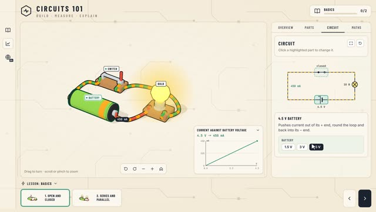
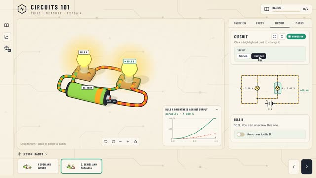
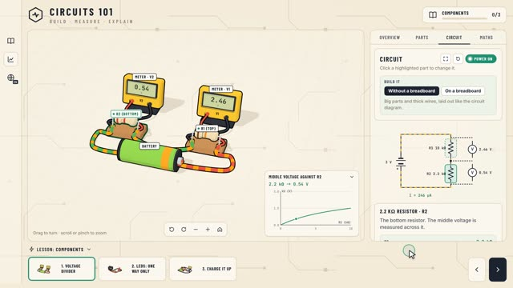
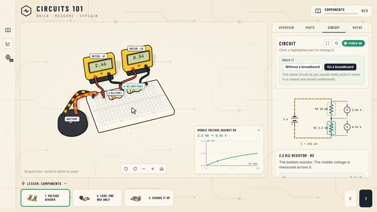
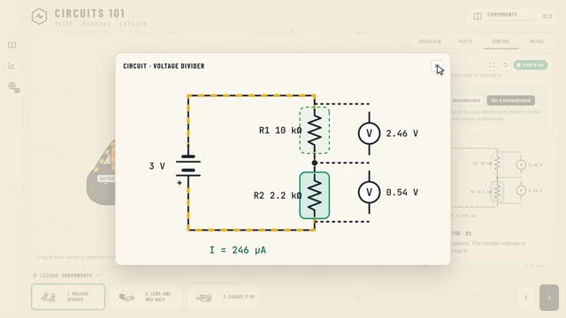
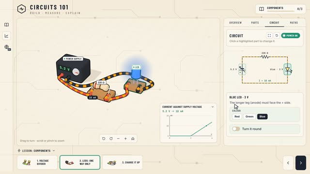
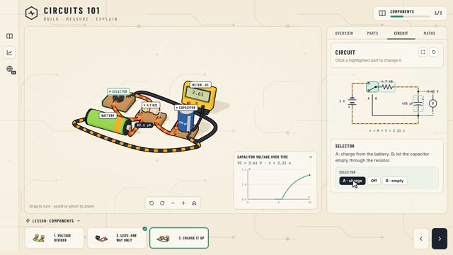
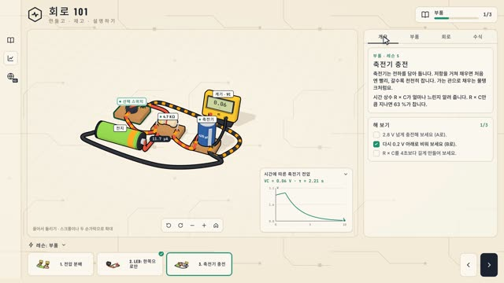

작업 흐름
- 입력
- 배울 주제와 배우는 사람 (예: 간단한 기계, 렌즈와 빛, 냉장고의 원리)
- 브리프
- 단원과 레슨 4–9개, 레슨마다 하나의 생각 · 실험대 부품 · 조작 · 모델과 단위 · 그림 방식 · 그래프 · 수식 · 해 보기 목표 세 개
- 설계
- 주제에 맞는 부품 키트, 레슨마다 모델 하나 (값 → 3D · 그림 · 그래프 · 수식이 모두 같은 숫자), 모든 글의 언어별 문구, 커서 투어
- 검사
- 언어 누락, 아무것도 바꾸지 않는 조작, NaN 문구, 화면 밖 실험대, 겹친 이름표, 그림과 실험대의 불일치, 허공을 누르는 투어, 휴대폰 가로 스크롤
- 출력
- 데스크톱과 휴대폰에서 도는 라이브 앱, 레슨별 스틸, 1920×1080 투어 MP4
cd hands-on-lab
node scripts/check.mjs examples/circuits
node scripts/render.mjs examples/circuits out/lessons --lessons --on
node scripts/render.mjs examples/simple-machines out/machines.mp4
node scripts/new-course.mjs ../my-course --from simple-machines요구 사항: Node 18+, Playwright Chromium (헤드리스 WebGL), ffmpeg. three.js와 폰트를 함께 담고 있어 앱은 네트워크 없이 돕니다. 단계별 순서는 SKILL.md에 있습니다.
샘플
두 코스의 투어에서 뽑은 장면입니다. 계기 화면, 그림의 숫자, 그래프의 점, 수식이 한 프레임 안에서 모두 같은 값을 가리킵니다. 카드를 누르면 새 탭에서 그 순간부터 투어가 재생되고, 아무 곳이나 누르면 직접 조작으로 넘어갑니다.
회로 101 스타일 기준 예제 · 레슨 5개 · 64초 투어
원본 영상에서 읽은 모습과 앱 구성을 우리 코스로 다시 만든 예제입니다. 전류가 흐르는 전선에만 노란 줄무늬가 움직이고, 회로도의 부품을 눌러도 3D 부품을 눌러도 같은 카드가 열립니다.

기초 · 레슨 1열린 회로, 닫힌 회로
스위치를 닫고 전지를 4.5 V로, 450 mA가 전선 위 값 표와 회로도에 같이

기초 · 레슨 2직렬과 병렬
연결을 바꾸면 전선 배치가 다시 지어짐, 전구 B를 빼 보는 토글

부품 · 레슨 3전압 분배
R2 슬라이더를 끌면 계기 · 회로도 · 그래프 점이 함께 움직임

만드는 방법브레드보드에
같은 레슨, 다른 배치: 큰 부품 / 실제로 꽂는 모습

회로도크게 보기
전류가 흐르는 길에 움직이는 점선, 고를 수 있는 부품은 점선 상자

부품 · 레슨 4LED: 한쪽으로만
순방향 전압 아래에선 0 A, 뒤집어 꽂으면 꺼짐

부품 · 레슨 5축전기 충전
시간에 따라 변하는 상태, 지난 10초 그래프와 τ = R × C

다국어한국어로
이름표 · 패널 · 그래프 · 수식이 모두 언어별 문구로
기계 101 새 주제 · 브리프에서 설계 · 레슨 4개 · 56초 투어
원본에 없는 주제를 BRIEF.md부터 끝까지 만든 예제입니다. 부품, 모델, 힘 그림, 흐르는 것(줄)까지 모두 이 주제에 맞게 새로 지었습니다.
실제 작품
이 스킬은 X에 올라온 화면 녹화(Dilum Sanjaya, 48개 레슨 · 13개 언어의 Electronics 101 앱, 2분 35초)를 5초마다 뽑은 프레임으로 읽고, 이 레포에서 처음부터 지었습니다. 원본 앱의 코드 · 그림 · 문구 · 이름은 쓰지 않았고, 모습과 앱 구성만 가져왔습니다.
링크
- SKILL.md 워크플로 · 규칙 · 계약
- 폴더 lib · scripts · references · examples
- README.md 빠른 시작
- references/BRIEF.md 주제 → 코스 브리프, 스틸 검토 기준
- references/LESSON.md 코스 · 레슨 계약, 키트 API, 투어
- references/STYLE.md 모습을 숫자로
- references/LESSONS.md 겪은 문제와 해결